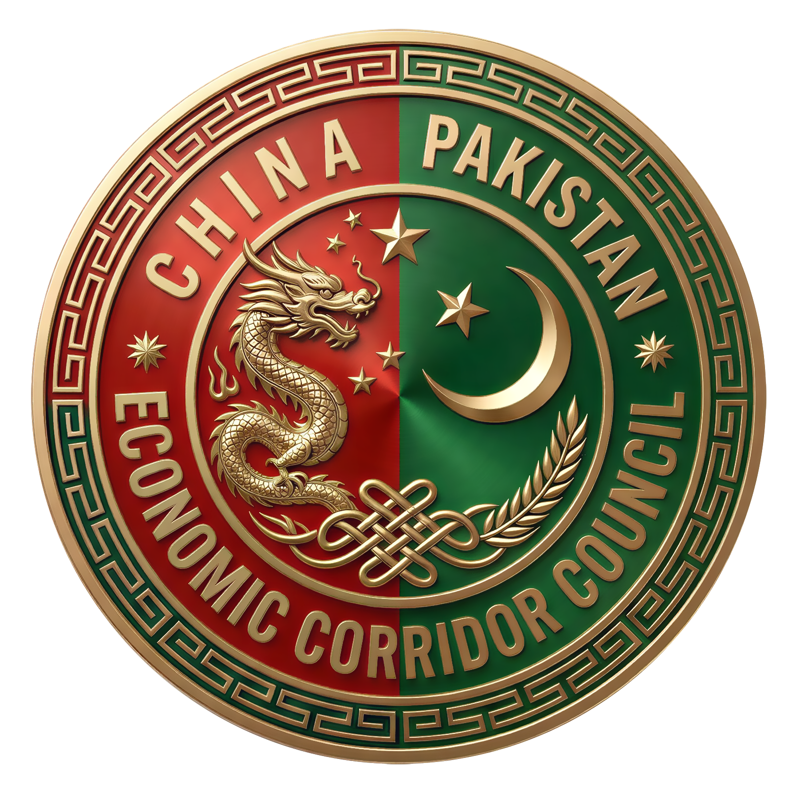

A registered non-profit, non-political and non-commercial organization established to promote socio-economic cooperation, education, and public welfare initiatives, with a focus on strengthening Pakistan–China relations.
The China Pakistan Economic Corridor Council (CPECC) is a registered society under the Societies Registration Act, 1860, headquartered in Islamabad, Pakistan. It operates as a non-profit, non-political, and non-commercial organization dedicated to strengthening Pakistan–China cooperation.
The Council promotes structured collaboration across education, research, healthcare, and social development sectors to foster sustainable growth and long-term partnerships.
The CPECC identity represents unity, cooperation, and shared development goals between Pakistan and China. It embodies a strategic partnership built on mutual respect, trust, and long-standing diplomatic relations. The Council serves as a symbol of collaborative progress, fostering economic growth, cultural exchange, and knowledge sharing between the two nations. Through its initiatives, CPECC reflects a commitment to sustainable development, institutional collaboration, and the advancement of public welfare, aligning with the broader vision of regional connectivity and prosperity.
To foster sustainable development and strategic collaboration between Pakistan and China.
To advance education, research, and social welfare through partnerships and inclusive programs.
Promote collaboration and partnerships across institutions and communities.
Support academic institutions, research, and knowledge exchange programs.
Enhance healthcare access and support vulnerable communities.
Develop learning spaces and promote literacy initiatives.
Poverty alleviation, rehabilitation, and social protection programs.
Managed by an executive committee ensuring strategic direction.
Accountable and ethical operational practices.
Donations, grants, memberships, and partnerships.
All funds used strictly for organizational objectives.
We invite institutions, professionals, and partners to collaborate in advancing sustainable development and strengthening Pakistan–China cooperation.
Get in Touch